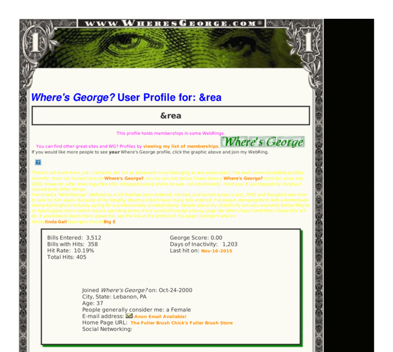

Previewing: Where's George? Who's &rea? What the.....? Previewing: Where's George? Who's &rea? What the.....? 
Use the left/right red arrow controls to navigate through this ring - Click the preview image to visit the member site.

My official "Where's George?" profile. It's nothing fancy yet, I haven't racked up the hits that some Georgephiles have. But I'm working on it.
Where's George? Who's &rea? What the.....? owned by:
 andrea2292 andrea2292
A member of the original webring since 01/06/2007.
|
|